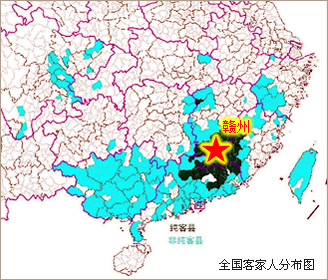
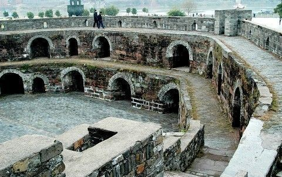

| 首页| 红色故都| 江南宋城| 生态明珠| 客家摇篮| 世界橙乡 |
|
赣州是客家先民中原南迁的第一站，是客家民系的发祥地和客家人的主要聚居地之一，全市客家人口占95%以上，世称“客家摇篮”。现今仍有600余幢神奇的 客家围屋，被称为“东方的古罗马”，至今保存最完好、最具代表性的有龙南关西新围、燕翼围和安远的东升围，走进围屋就走进古老的城堡。这里有规模宏大的客 家文化城，是客家后人寻根祭祖的圣地；还有那尘封已久的客家古村落——白鹭村，等着你揭开神秘的面纱。在这里，只要掬一把清波，就能看见客家血脉的搏动， 只要捧一把红土，就能听见客家乡亲的心音。 |
关于客家人的迁徙，史学界和民族学界一般认为是从晋代八王之乱、永嘉之乱时开始。正是１６００多年前连年的战乱使得近百万河洛人从中原背井离乡客居南方，形成我国历史上第一次大规模的南迁浪潮。他们便是今日遍布世界各地客家人的先人。这些南迁者，不少都是贵族王室、军人和文人的后裔，他们家庭富裕，举止文雅，有文化，活动能力强，风度习俗均高于当地人，所以被当地人尊敬地称为“客人”或“客家人”。他们先是躲入深山避世，后又走出深山济世。在漫长的岁月中，客家人以独特的历史、文化特征和爱国情怀、奋斗精神，为中国和世界许多国家的经济发展、社会进步发挥了和正在发挥着重要的作用。但不管功成名就，还是默默无闻，世世代代的漂泊令他们格外重视自己的“根”。
东晋以后，一直到太平天国时期，客家先民由于战乱饥荒所迫或自我发展的需求，先后经历了五次大规模的南迁，其主流皆是溯赣江、贡江而上，最先在赣州这块宝地弃舟登岸，并与土著居民相互融合，最终在这里形成了客家文化和客家民系的萌芽和雏形。南宋末年到元末明初，由于受新一轮移民潮和自身人口发展的压力，赣南、闽西的居民源源不断向人口稀少的粤东地区发展。明代中后期，粤东的居民有的返迁赣南、赣中，甚至远迁浙江、四川、贵州、台湾等地，一部分则跨海越洋播迁到东南亚以及世界各地。
家园赣州：神奇故土客家摇篮。
广袤赣南大地，浩然客家摇篮。
悠悠千载，一代代客家先民历尽艰辛来到赣州这方神奇的土地繁衍生息。于是乎，这里的山山水水记录了客家文化、客家民系的孕育、形成和壮大发展，记录了一代代客家人的跋涉、苦痛、光荣与梦想。
赣州自古就以其“南控北越，北达三江”、“据五岭之要会，扼粤闽之要冲”的优越地理位置和便利的水路交通及丰富的自然资源，成为中原移民的首选“宝地”。无论古代还是近代，因兵灾、饥荒等所迫的闽粤客家人，既有迁往他省和海内外寻求发展的，也有因地缘、血缘关系，重新回到赣州安家定居的。无论何时，赣州都以其博大的胸怀、丰沛的乳汁、慈善的面容笑迎无数南来北往的客家人，她不仅养育、成长了最早入境的客家先民，也抚慰、呵护着这些回流倒迁的“新客”。大量史实证明，赣州是客家先民南迁的“第一站”，是客家人最早的“集散地”，还是当今设区市中客家人最大的“聚居地”。据估计，目前，源自客家民系的客家人总数约为８０００万，其中６８００万人分布在国内１９个省（市、区）的１８０个县（市、区），约６４０万人分布在港、澳、台地区，５００万人分布在世界五大洲的其他８５个国家和地区。国内目前大致有４６个纯客家县（市），赣州１８个县（市、区）中有１７个纯客家县（市），全市８００多万人口有９０％为客家人。
流浪迁徙和团结奋斗的传奇故事在代代客家子弟中传诵着。离乡千年，漂泊万里，家似乎越来越远，而彼此的心却越靠越近……离家的路如此曲折，回家的路又是何等漫长！赣州，这客家先民南迁的“第一站”，客家人过去最早的“集散地”和当今最大的“聚居地”，于是更多地承载了客家人的故土情结。鸟恋旧林，鱼思故渊。
客家方言在不同的地方有不同的叫法，在广东东部北部叫客话、客家话；在广东西部和广西东南部叫涯话、麻介话、新民话；在湖南浏阳叫客姓话；在四川叫土广东话。但通称客家话。这是自称和他称的合一。
客家方言主要通行于大陆的广东、广西、福建、江西和四川、湖南、海南部分地区。其中主要的区域是广东东部和北部，广西南部，江西南部，福建西部。粤闽赣边区一带是客家最集中的地区，因而也是客家方言最流行的地区。在海外，台湾和香港有部分地区讲客家话。东南亚印度尼西亚、马来西亚、新加坡、泰国、越南、菲律宾以及美洲华侨、华裔中也有不少讲客家话的。
广东的客家方言几乎遍布全省，但主要分布在粤东、粤北地区。其中纯粹属客家方言或以客家方言为主的县市有：梅县、兴宁、五华、大埔、蕉岭、平远、龙川、和平、始兴、连平、新丰、河源、丰顺、紫金、南雄、翁源、连南、英德、惠阳、曲江、博罗、宝安、惠东、揭西、仁化 、乐昌、廉江、乳源。此外饶平县、揭西、海丰、陆丰、龙门、从化、花县、新会、化州、四会、阳江、鹤山、三水、高要、开平、信宜、珠海、深圳龙岗、东莞等广东的其它地区的一些县市也有不同程度的客家话分布。据最新调查资料统计，在粤西的湛江、茂名、阳江三市约有190万人讲客家话，分布区域约为6400平方公里，具体分布在廉江、化州、信宜、高州、电白、阳西、阳春等县 。
福建省客家方言主要分布在闽西的长汀、连城、上杭、武平、永定、清流、宁化、明溪等县。此外，南靖的曲江，平和县的九峰、长乐，诏安县的秀篆、官陂，龙岩西北部万安（旧名溪口镇）等地说的也是客家方言。
江西省客家方言主要分布在赣南的兴国、宁都、石城、瑞金、会昌、寻邬、安远、全南、龙南、定南、信丰（不包括县城嘉定镇和城郊的部分农村）、大余、崇义、上犹、南康、赣县、于都等十七个县和西北部的铜鼓县、修水县的大部分乡镇。此外，萍乡、广昌、永丰、吉安、泰和、万安、遂川、井冈山、宁冈、永新、万载、宜丰、奉新、靖安、高安、武宁、横峰等县市的部分乡镇均讲客家方言。
四川省也是客家人居住较为集中的一个省份，客家方言主要分布在成都郊区东山一带、新都、金堂、广汉、什邡、彭县、双流、新津、简阳、仁寿、资中、威远、安岳、富顺、泸县、合江、宜宾、广安、仪陇、巴中、通江、达县、西昌等县市的局部地区。
广西壮族自治区客家方言分布全区90个市县中的79个市县，占所有市县的87.78%。就乡镇而言,全区1364个乡镇中,583个乡镇有客家话,占所有乡镇的42.74% 。广西客家方言集中的地方，主要是在陆川、博白、浦北南部与合浦东部；其次是防城、钦城与灵山相连的一片地区；以贵县为中心，沿铁路东南至玉林北部、西北黎塘、宾阳地区；此外还有来宾、桂平、平南、象州、柳州、贺州、蒙山、荔浦、阳朔等。
湖南省的客家方言主要通行于攸县、茶陵、炎陵、汝城、桂东等县的某些乡村，还有浏阳、平江县的某些乡村。江永、江华等地也有少数人说客家方言。
台湾的客家方言主要分布在桃园以南各乡镇和中坜、新竹、竹东、苗栗一带乡镇以及屏东县一部分乡镇、高雄县的美浓镇。
客家方言在海外的分布可分为亚洲、非洲、欧洲、美洲、大洋洲五个地区。其中亚洲讲客家方言的共有350万人，主要分布在印度尼西亚、越南、缅甸、印度、马来西亚、泰国、新加坡等国家。非洲的客属华侨华人共有5.4万人,分布在毛里求斯、留尼旺、南非等12个国家。在美洲约有46万人讲客家方言，分布在秘鲁、美国等21个国家和地区。欧洲、大洋洲的客属华侨华人有16万和4.4万人。